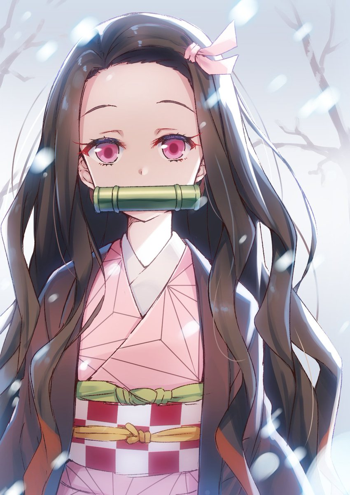
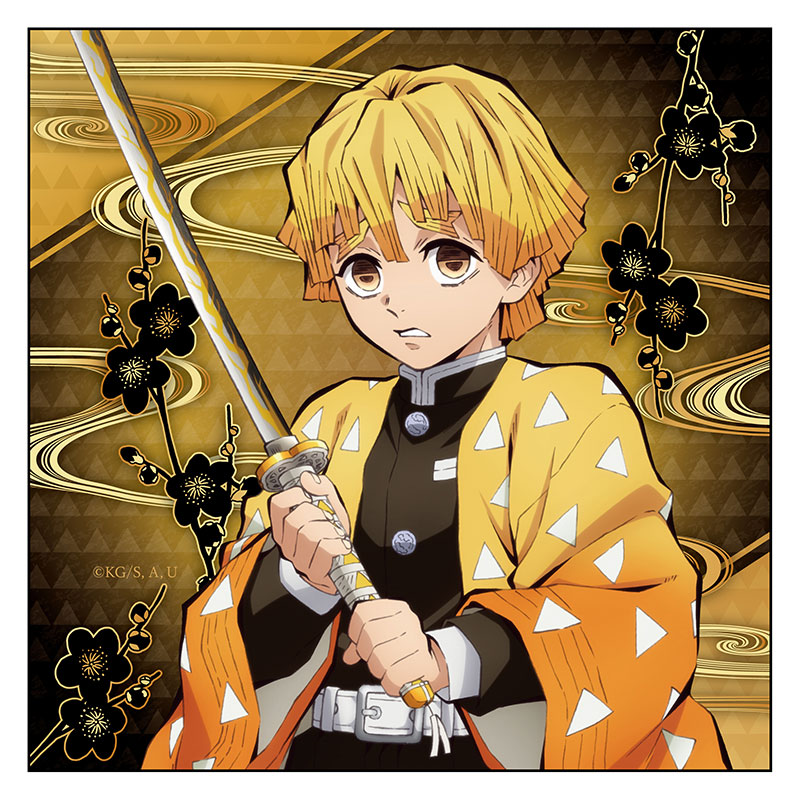
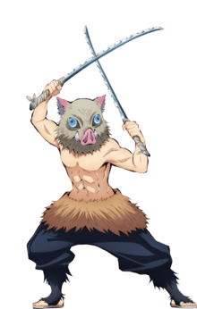

竈門炭治郎（竈門 炭治郎／かまど たんじろう），聲：花江夏樹 一名善良的少年，具有敏銳的嗅覺，能在與鬼的戰鬥中聞出破綻的氣味。為了將變成鬼的妹妹變回人類、並為死去的家人報仇雪恨，加入了專門狩獵惡鬼的組織「鬼殺隊」。
竈門禰豆子（竈門 禰豆子／かまど ねずこ），聲：鬼頭明里 炭治郎的妹妹，在與其他家人一同被鬼襲擊時，因為傷口沾染鬼舞辻無慘的血液，於瀕死之際被變化成鬼，總是從危害中保護炭治郎與其他人而行動。在成為鬼之前，她是個時時心念家人的溫柔女孩。
我妻善逸（我妻 善逸／あがつま ぜんいつ），聲：下野紘 炭治郎同期的鬼殺隊士。自己極度沒有自信，常常說出自嘲的發言。擁有極佳聽覺，能分別出鬼和人類的聲音。極度恐懼時而陷入沉睡，並激發出強勁的實力。
嘴平伊之助（嘴平 伊之助／はしびら いのすけ），聲：松岡禎丞 炭治郎同期的鬼殺隊士。經常戴著野豬頭套，性格極為好戰。因為在山林中成長而有著銳利的觸覺，能精確捕捉到尚未進入視野的對象之所在位置。